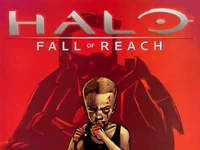
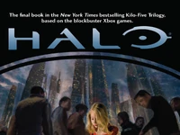
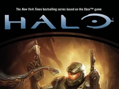
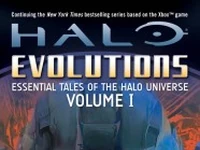
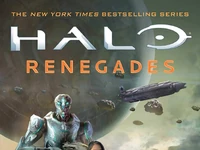
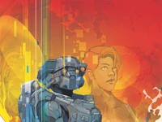

Halo: La Caída de Reach es la precuela de Halo: Combat Evolved, y también es la primera novela del Universo de Halo en ser publicada. Fue escrita por Eric Nylund, y publicada el 30 de Octubre de 2001. Según informes, la novela fue redactada en siete semanas. Finalmente se convertiría en un best-seller de Publishers Weekly con cerca de 200,000 copias vendidas en los Estados Unidos y el Reino Unido. La novela fue reeditada y publicada nuevamente el 3 de Agosto de 2010 por Tor Books, con una nueva versión que incluye algunas actualizaciones de contenido y contenido adicional. El 28 de Junio de 2011, Tor Books publicó la "Edición Definitiva" de la novela, que solucionó muchos de los errores introducidos en la reedición de 2010.
Halo: Fall of Reach es una serie de adaptaciones en cómics de la primer novela de Halo, Halo: La Caída de Reach. Esta serie fue publicada por Marvel Comics en conjunción con 343 Industries, y escrita por Brian Reed con el arte de Félix Ruíz. La serie consiste de tres historias: Boot Camp, la cual muestra la infancia de John-117 y su entrenamiento como Spartan; Covenant, que se centra en los primeros días de la Guerra Humano-Covenant; e Invasion, que cubre las secciones finales de la novela, incluyendo la propia Caída de Reach.
La guerra terminó. Pero el odio, la culpa y la devoción siguen allí. Con la guerra contra el Covenant, la Oficina de Inteligencia Naval se enfrentó nuevamente a viejos agravios que amenazaron la Tierra. Las colonias continúan con su amargura, su enojo, aún tienen cuentas pendientes desde la Insurrección, ahora quieren justicia. Lo mismo ocurre con un hombre cuya vida fue destrozada por la ONI, cuando su hija fue secuestrada para integrarse al Proyecto SPARTAN-II. El Equipo Kilo-Cinco pone su lealtad a prueba cuando descubren que el padre de Naomi-010, su compañera SPARTAN, sigue buscando la verdad sobre su desaparición, preparándose para cristalizar algunas ciudades en la Tierra para obtener la respuesta. ¿Podrá el Equipo Kilo-Cinco detenerlo?, ¿será capaz de vivir con la verdad cuando la encuentre?. La dolorosa respuesta se encuentra con un hombre que está muerto desde hace mucho tiempo, y una conciencia que todavía sobrevive en el lugar más improbable, aún sin descubrir.
La maquinaria de guerra Covenant continúa avanzando. Las últimas esperanzas de la humanidad están en la tripulación del Pillar of Autumn: el indomable Capitán Jacob Keyes, el Sargento Avery Johnson, la IA Cortana, cientos de valientes Marines… y el Spartan-117, el Jefe Maestro. Luego de escapar de la batalla de Reach, la tripulación del Pillar of Autumn es obligada a dar un salto despliespacial para evadir a la vasta alianza decidida a acabar con la humanidad. Pero si destino los lleva a un misterio antiguo y un problema más grande. En esta esquina del universo flota un mundo en forma de anillo artificial masivo… un constructo de una raza extinguida hace tiempo. La única esperanza de los humanos es aterrizar en la superficie y luchar contra el Covenant en la Tierra.
Halo: Evolutions - Essential Tales of the Halo Universe, conocido en español como Halo: Evoluciones - Cuentos Esenciales del Universo de Halo, es un libro compuesto por pequeñas historias y poemas publicado por Tor Books. Al igual que la Novela Gráfica de Halo, Halo: Evolutions presenta historias de grandes escritores como Eric Nylund, Frank O'Connor, Tobias Buckell, entre otros. Fue lanzado en Noviembre de 2009 en países como Estados Unidos, Canadá y el Reino Unido. También cuenta con una versión de audiolibro disponible en Amazon.com, Audible.com y iTunes. Es narrada por Steve Downes, Holter Graham, Frank O'Connor y Jen Taylor. Halo: Evolutions fue re-lanzado con dos volúmenes separados y con historias adicionales, así como una nueva portada para cada una de las historias originales seleccionadas por la Comunidad de Competencia de Arte.
"Encontrar. Reclamar. Ganar. En una galaxia posterior a la Guerra contra el Covenant llena de chatarra, ese es el lema del Recolector, y Rion Forge ciertamente dejó su huella en el mercado. Todo lo que quería era hacer crecer su negocio y continuar la búsqueda de su padre perdido hace mucho tiempo, pero su reciente descubrimiento de un campo de escombros Forerunner en el borde del espacio ocupado por los humanos ahora la ha puesto de lleno en la mira de la Oficina de Inteligencia Naval y los violentos restos del Covenant. Cada facción tiene el deseo de reclamar el botín de la antigua tecnología, cueste lo que cueste, enviando a Rion y la tripulación de la Ace of Spades a una peligrosa aventura, una que inesperadamente los lleva directamente a un peligro mucho mayor que cualquier otra cosa que han encontrado..."
Halo: Lone Wolf muestra a Linda en una peligrosa misión encubierta sin su equipo. Sus habilidades en infiltración y puntería la hacen perfecta para la misión de alto riesgo para acabar con la amenaza planteada por un científico buscado en un planeta lejano. Con solo una IA de la ONI a su lado, Linda debe luchar a través de la basura del Covenant y la hostilidad de un asentamiento humano perdido para así detener al científico rebelde en su camino